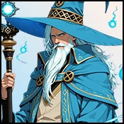

Player wiki noticeThis community-maintained page may contain gameplay, story, and mature-content spoilers.

概览
Gandon 蓝色 他的当前内容包括Sabbath 任务及其报复后续、两个先进的魔法课、用于招募Lime的“魔法师启动测试”和“Brothel酒吧”的表演反应。他的进步以追求和教训为中心;他没有个人浪漫、公寓、约会、工人或度假路线。
快速状态
| 属性 | 数值 |
|---|---|
| 字符显示年龄 / 时代 /对齐 | 120 中世纪/中立 |
| 地点 | 室内魔法师,三魔法师的塔,村 |
| 时间表 | 上午10时至8时每场比赛 |
| 说话 | 20分钟;0个基础感情;每天3个 |
| 最喜欢的数据/特殊关系技能 | 无 |
| 普通礼品 | 无 |
| 经验教训 | 向导; 向导 |
| 相关字符 | Sabbath、Sashina、Blinky和Lime |
建议的查询
- 在 内部巫师,上午10时至8时选择 接受查询。这需要 0分钟,将追求设定为接受和奖励 1 向导块单独谈话是不能接受的
- 访问 Sabbath在女巫的胡同, 6点到午夜,用于 女巫的慷慨礼物它的要求是Gandon被接受的拼写图书求求,没有Sabbath 爱的门。 向导酒 和 10个固定的Sabbath感情;它不提供单独的拼写簿目录项目。
- 回到原点 内部巫师,上午10时至8时,携带巫师酒。 蓝色魔法师的Mishap 自动触发, 消耗酒和给 10个固定的Gandon感情。所有三个响应都完成了这个步骤。您随后返回塔外。
- 时 Sashina确认 和 Gandon确认,访问 古老的地球圣殿,上午6时至3时,用于 Sashina的青蛙救援任务。它需要蓝魔法师的Mishap完成, 赠款 翻译奖项 15个固定Gandon 爱加上10个固定Sashina 爱。答复 “我想你可能会觉得很有趣。” 添加 5个基点 Sashina 点。Gandon中不需要单独的铸币转换行动。
- 这两个固定的Gandon共计奖励 25,足够 已知 返回到 Gandon 。 学习向导 和 接受复仇查询接受复仇的任务 0分钟 并给出 1 向导块.
- 提升 Sabbath到500爱 和使用情况 调制 Sabbath 在巫师胡同期间 下午6点半 时间表。 120分钟30个能量 并给出 黑裤子密钥项目 您不需要单独的盗窃行动或商店购买。
- 回到原点 内部巫师,上午10时至8时,在Gandon是 已知 而复仇的追求被接受。 甜蜜复仇已完成 自动触发, 消耗项目和奖项 25 固定 Gandon 爱。每一份答复都会完成交付。
- 连锁店Gandon的奖励总额 50,足够 知识 无其他损益。 学习主向导,然后编写下面单独的“向导启动”要求。
蓝魔法师的Mishap后可选:返回 Sabbath's Witches' hut, 6 PM -午夜,用于 女巫的凯旋之光,授予 10个固定的Sabbath感情此场景不是Sashina营救或复仇送货的先决条件。
运送物品和Sashina的营救 一次性自动场景 。它们的奖励是直接添加的,所以是固定的,而不是最喜爱的、按需要或技能调整的基准值。Gandon 当前的报复行动检查 已知和尚未接受虽然上面的订单自然地提供了必要的爱意。
谈话和关系进展
与 Gandon 交谈 费用 20分钟,与 每日3种允许用途 和 记录的0个基点进一步尝试记录-1个基点,并接受共同的超限处理。
零基点不能保证零最后的爱: 他的Talk处理器仍然使用共享关系计算法,其最小和一般设备、布法、吸引力和对齐奖金可以产生小收益。他没有最喜爱的Stat或特殊技能乘数。 固定追求奖 以上为已知和熟悉的里程碑。
向导和向导主课
| 课程 | Gandon要求 | 费用 | 结果 |
|---|---|---|---|
| 学习向导 | 已知; 尚未学习的向导 | 150分钟;40个能量;40个平静;0美元 | 学习向导;没有配置课程感恩奖 |
| 学习主向导 | 知识;主向导尚未学习 | 300分钟;70个能量;70个平静;0美元 | 学习主向导;没有配置的课情奖 |
在 Gandon 期间开始 上午10时至8时 计划、精力和冷静。通用的学习动作赋予了被命名的技能,并一次性支付其列出的费用; 较年长的个性特定帮助者不是额外的支付。
一般技能目录 向导的神秘40 向导的神秘60不过 Gandon当前的课程动作没有执行这些STAT阈值。它们使用上面显示的关系和已经学到的检查。他的“主向导”动作也没有配置单独的“向导”先决条件。“向导”帮助 1和主向导 2,到整个巫师的技巧部分。
向导启动要求
选择 向导启动 输入 内部巫师,上午10时至8时行动成本 60分钟,不配置额外资金、能量或平静的付款,并要求:
- Gandon 知识.
- Blinky 已知.
- 向导总块 50包括魔法技巧和获得的动作影响力
- Lime 尚未作为女佣获得 4.
- 在当前游戏日的早些时候没有失败的启动 。
Sashina 和 Aziza 参加测试,但该动作不需要单独一个爱的阶段与其中之一。 Gandon 的求求接受动作供应 1个向导。已知的神奇技能贡献了他们列出的影响力:大多数给予 1; 黑魔法、轻魔法和闪烁 给 每个2个。在其它处的向导动作中添加该技能总数。检查 向导 在字符表中,显示大门所用的总数。
启动答复和奖励
开场的动机问题 无分数; 选择任何响应。 5个视线各得1-5分,最多为 25这些是测试分数,不是普通的亲情分数。
| 愿景 | 五点答案 | 分数 |
|---|---|---|
| 1 | 用风廊把火焰分割开 -为逃跑创造安全的道路 | 5 |
| 2 | 深入村民的脑海里 让他们冲过去帮忙 | 5 |
| 3 | 某种可持续的东西一个行业一个商店一个教学 | 5 |
| 4 | 闪开 - 完全拒绝选择 | 5 |
| 5 | 充分研究它 - 知识是值得付出的代价,标记是追求的徽章. | 5 |
| 最后分数 | 结果 |
|---|---|
| 25 | 完美通过; 3 个晶体 |
| 17–24 | 过; 1 晶体 |
| 17岁以下 | 失败;没有招聘或通过奖励;在以后的比赛日重试 |
两项通过的结果 招聘Lime为女佣 4,奖励 10 向导动作影响力,并添加 50 固定Lime 感情,25 固定Gandon 感情,15 固定Sashina 感情,15 固定Aziza 感情。Lime 的女仆号码不是Sandra 的工人号码。在获得后,“巫师启动”就消失了,不能再重复使用它来种植通行证奖励。失败会阻碍另一次尝试,直到 下个游戏日.
列出的五点答案 25/25 和三晶奖。选择一个有不同分数的答案并不是即时失败;测试在结尾评价综合总数。
Brothel 条性能反应
Gandon的可选 Arcane Critique (原始内容存档于2018-09-21) (中文(中国大陆) ). 选择通过 在Brothel酒吧表演歌曲与塔的菜单和追求分开 编曲 和可用栏。 60分钟30个能量,与 每个地点每天一次.
反应系统有一个 25%的基本机会增加 每人5个百分点 表演大师 舞台表演 音乐品德 讲故事和拥有Lute, 封顶于 50%当发生反应时,它选择其中之一。 7 溴化条反应;Gandon的外观没有保证,也不要求他的普通塔像出现在酒吧.
他的反应奖 8个基础感情. 照顾+4 是最佳的回复, 领先于 Funny +2 和 Buddy +1.它在以后的表演中被选中时是可重复的, 并且不是 Wizardry 的前提条件, 无论是追求还是 Wizard Instroduction 。 共享关系计算决定了最终的感情收益 。
可选的私人订房
Gandon 进入 接收客户端 名册 妓院声誉 19。在 玫瑰索恩入口( T) 与 启用Netorare酒店分公司不提供这种系统。
在符合条件的客户中随机选择名册,因此开始预订并不能保证Gandon。 每日一次性预订津贴和普通的谈话柜台分开 完成的接受访问需要 30分钟 并且直接支付收费,并可能提供小费和质量奖金。 10分钟 并且仍然使用预订津贴,不支付接受访问费。
使用一个活跃、健康、轮班和随时可用的合格工人,而不是在度假胜地休息,或被分配为舞厅学徒。 30 个. Gandon没有配置家庭排斥条目。 智慧、信心和纪律性的热情,与 A. R. I. A. 列为他最喜欢的;特殊配对场景存在于 A.R.I.A.、Ember、Lindia.
实际共享服务逻辑 忠诚/愿意接受训练 平均数 Dexter 和质量能力对于怪物,Agility提供 Dexterity的插槽。 外观和魅力a 影响小费计算( Allure and Aura for monsters) 。 客户端的遗存最爱、stat 和权重字段不会取代这些已执行的计算或统一的客户端选择 。
即使是强壮到超过难度的工人也保留着 10%的机会不好客户访问分别授予企业和选定的工人奖励; 没有 给予普通的Gandon亲情或NPC亲情体验。成功的工人褒扬奖金可以给予选定的工人NPC。 5个直接的感情,而不是Gandon。
如果进程 Stalls 显示
- 到达 8点前;塔的普通肖像时间表在那个时间结束.
- 选择 接受查询,然后访问 Sabbath 下午6点半。“对话”不会设置已接受的遗赠旗帜。
- 带上 向导酒 返回 Gandon ,用于自动发送。该项已耗尽;没有单独的Spellbook 切换项目。
- Sashina的救援,检查 两个确认阶段完成的酒场和 早上6时至3时.
- 为了复仇,接受Gandon的第二次探索,建设 Sabbath500 爱编辑 调制 Sabbath,然后随 黑裤子 而Gandon是已知的。
- 普通链给 Gandon 10+15+25=50 固定爱心其他损益可以改变所达到的阶段。
- 对于向导启动,请检查 Gandon 精通,Blinky 已知和总精通. 已知技能对影响力很重要;Gandon的感情和派系影响力是不同的价值观。
- 在失败的启动后,等待 下个游戏日。在获得Lime后,测试的动作被故意隐藏。
- 调试图像测试动作在正常的行走范围之外. Gandon没有标准的天赋,个人H2H,日期,公寓或度假路径解锁.
相关页面
Overview
Gandon the Blue is the wizard in the Three Wizards' tower. His current content includes the Sabbath errand and its revenge follow-up, two advanced magical lessons, the Wizard Initiation test used to recruit Lime, and a Brothel Bar performance reaction. His progression is centered on quests and lessons; he has no personal romance, apartment, date, worker or resort route.
Quick Stats
| Attribute | Value |
|---|---|
| Character-profile age / era / alignment | 120 / Medieval / Neutral |
| Place | Wizard Interior, Three Wizards' tower, Village |
| Schedule | 10 AM–8 PM, every game day |
| Talk | 20 minutes; 0 base affection; three per day |
| Favorite stats / special relationship skill | None |
| Ordinary gifts | None |
| Lessons | Wizardry; Master Wizard |
| Related characters | Sabbath, Sashina, Blinky and Lime |
Recommended Quest Walkthrough
- Meet Gandon in the Wizard Interior, 10 AM–8 PM, and choose Accept Quest. This takes 0 minutes, sets the quest as accepted and awards 1 Wizard clout. Talking alone does not accept the errand.
- Visit Sabbath at the Witches' Hut, 6 PM–midnight, for The Witch's Generous Gift. Its requirement is Gandon's accepted spellbook quest, with no Sabbath affection gate. The completion gives Wizard Wine and 10 fixed Sabbath affection; it does not grant a separate Spellbook inventory item.
- Return to the Wizard Interior, 10 AM–8 PM, carrying Wizard Wine. The Blue Wizard's Mishap triggers automatically, consumes the wine and gives 10 fixed Gandon affection. All three responses complete this step. You return to the tower exterior afterward.
- At Sashina Acknowledged and Gandon Acknowledged, visit the Ancient Earth Shrine, 6 AM–3 PM, for Sashina's Frog Rescue Mission. It requires The Blue Wizard's Mishap completed, grants Transmutation, and awards 15 fixed Gandon affection plus 10 fixed Sashina affection. The reply “I thought you might find it amusing.” adds 5 base Sashina points. There is no separate Cast Transmutation action required at Gandon.
- These two fixed Gandon rewards total 25, enough for Known from a fresh relationship with no losses. Return to Gandon for Learn Wizardry and Accept Revenge Quest. Accepting the revenge errand takes 0 minutes and gives 1 Wizard clout.
- Raise Sabbath to 500 affection and use Seduce Sabbath at the Witches' Hut during her 6 PM–midnight schedule. It costs 120 minutes and 30 energy and gives the Black Panties key item as its conversation starts. You do not need a separate theft action or shop purchase.
- Return to the Wizard Interior, 10 AM–8 PM, carrying Black Panties while Gandon is Known and the revenge quest is accepted. Sweet Revenge Completed triggers automatically, consumes the item and awards 25 fixed Gandon affection. Every response completes the delivery.
- The chain's Gandon rewards total 50, enough for Acquaintance without other gains or losses. Use Learn Master Wizard, then prepare the separate Wizard Initiation requirements below.
Optional after The Blue Wizard's Mishap: return to Sabbath's Witches' Hut, 6 PM–midnight, for The Witch's Triumphant Gloating, awarding 10 fixed Sabbath affection. This scene is not a prerequisite for Sashina's rescue or the revenge delivery.
The item deliveries and Sashina's rescue are one-time automatic scenes with the listed windows. Their rewards are added directly, so they are fixed rather than favorite-stat or skill-adjusted base values. Gandon's current revenge action checks Known and not already accepted; it does not additionally require the earlier chain to be completed, although the order above supplies the necessary affection naturally.
Talk and Relationship Progress
Talk to Gandon costs 20 minutes, with three allowed uses per day and 0 recorded base points. His dialogue follows the quest's current step. Further attempts record −1 base points and are subject to the shared over-limit handling.
Zero base points does not guarantee zero final affection: his Talk handler still uses the shared relationship calculation, whose minimum and general equipment, buff, Attractiveness and alignment bonuses can produce a small gain. He has no favorite-stat or special-skill multiplier. Use the fixed quest rewards above for predictable Known and Acquaintance milestones.
Wizardry and Master Wizard Lessons
| Lesson | Gandon requirement | Cost | Result |
|---|---|---|---|
| Learn Wizardry | Known; Wizardry not already learned | 150 minutes; 40 energy; 40 calm; $0 | Learns Wizardry; no configured lesson affection reward |
| Learn Master Wizard | Acquaintance; Master Wizard not already learned | 300 minutes; 70 energy; 70 calm; $0 | Learns Master Wizard; no configured lesson affection reward |
Start during Gandon's 10 AM–8 PM schedule and have enough energy and calm. The generic learning action grants the named skill and pays its listed costs once; the older character-specific helper is not an additional payment.
The general skill catalogue lists Mystic 40 for Wizardry and Mystic 60 for Master Wizard, but Gandon's current lesson actions do not enforce those stat thresholds. They use the relationship and already-learned checks shown above. His Master Wizard action also has no separate Wizardry prerequisite configured. Learning Wizardry contributes 1, and Master Wizard 2, to the skill portion of total Wizard clout.
Wizard Initiation Requirements
Select Wizard Initiation in the Wizard Interior, 10 AM–8 PM. The action costs 60 minutes, with no additional money, energy or calm payment configured, and requires:
- Gandon Acquaintance.
- Blinky Known.
- Total Wizard clout 50, including magical skills and earned action clout.
- Lime not already acquired as maid 4.
- No failed initiation earlier in the current game day.
Sashina and Aziza participate in the test, but the action does not require a separate affection stage with either. Gandon's quest acceptance actions supply 1 Wizard clout each. Known magical skills contribute their listed clout: most give 1; Master Wizard, Dark Magic, Light Magic and Blink give 2 each. Wizard-clout actions elsewhere add to that skill total. Check Wizard in the character sheet, which displays the total used by the gate.
Initiation Answers and Rewards
The opening motivation question has no score points; choose any response. The following five visions score 1–5 points each, for a maximum of 25. These are test-score points, not ordinary affection points.
| Vision | Five-point answer | Score |
|---|---|---|
| 1 | Part the flames with a wind corridor - create a safe path for escape | 5 |
| 2 | Reach into the villagers' minds - nudge them to rush forward and help | 5 |
| 3 | Something sustainable - a trade, a shop, teaching. Magic should serve my life. | 5 |
| 4 | Blink away - refuse the choice entirely | 5 |
| 5 | Study it fully - knowledge is worth the price. Marks are badges of pursuit. | 5 |
| Final score | Result |
|---|---|
| 25 | Perfect pass; 3 Crystals |
| 17–24 | Pass; 1 Crystal |
| Under 17 | Fail; no recruitment or pass reward; retry on a later game day |
Both passing results recruit Lime as maid 4, award 10 Wizard action clout, and add 50 fixed Lime affection, 25 fixed Gandon affection, 15 fixed Sashina affection and 15 fixed Aziza affection. Lime's maid number is not Sandra's worker number. After acquisition, Wizard Initiation disappears; it cannot be repeatedly used to farm the pass rewards. A failure blocks another attempt until the next game day.
The listed five-point answers give 25/25 and the three-Crystal reward. Choosing an answer with a different score is not an instant failure; the test evaluates the combined total at the end.
Brothel Bar Performance Reaction
Gandon's optional The Arcane Critique is selected through Perform Song at the Brothel Bar, separately from his tower menu and quests. Have a composed song and the bar available. A performance takes 60 minutes and 30 energy, with one performance per venue per day.
The reaction system has a 25% base chance, increased by 5 percentage points each for Master Performer, Stage Presence, Musical Virtuosity, Storytelling and owning a Lute, capped at 50%. When a reaction occurs, it chooses one of seven Brothel Bar reactions; Gandon's appearance is not guaranteed and does not require his ordinary tower portrait to be present at the bar.
His reaction awards 8 base affection. Caring +4 is the best reply, ahead of Funny +2 and Buddy +1. It is repeatable when selected by later performances and is not a prerequisite for Wizardry, either quest or Wizard Initiation. The shared relationship calculation determines the final affection gain.
Optional Private-Client Bookings
Gandon enters the Receive a Client roster at brothel reputation level19. Start this action at the Rose & Thorn entrance with Netorare enabled, while operating a brothel. The hotel branch does not provide this system.
The roster selection is random among eligible clients, so starting a booking does not guarantee Gandon. The system has a shared once-per-game-day booking allowance, separate from his ordinary Talk counters. A completed accepted visit takes 30 minutes and pays the offered fee directly, with possible tip and quality bonus. Declining the booking or an unwilling worker's response takes 10 minutes and still uses the booking allowance, without the accepted-visit payment.
Use an eligible worker who is active, healthy, on shift and available, rather than resting, away at the resort or assigned as the Ballroom apprentice. Active monster workers need 30 Tamed. Gandon has no configured family-exclusion entry. His authored preference is intelligence, confidence, and disciplined enthusiasm, with A.R.I.A. listed as his favorite; special pairing scenes exist for A.R.I.A., Ember, Lindia.
The actual shared service logic uses Loyalty/Tamed for willingness and the average of Dexterity and Ability for quality. For monsters, Agility supplies the Dexterity slot. Appearance and Charisma affect tip calculation (Allure and Aura for monsters). The client's legacy favorite, stat and weight fields do not replace these implemented calculations or the uniform client selection.
Even a worker strong enough to exceed the difficulty retains a 10% upset chance. Client visits award business and selected-worker rewards separately; they do not grant ordinary Gandon affection or NPC intimacy experience. A successful worker praise bonus can give the selected worker's NPC 5 direct affection, rather than Gandon.
If Progress Stalls
- Arrive before 8 PM; the tower's ordinary portrait schedule ends at that hour.
- Choose Accept Quest, then visit Sabbath 6 PM–midnight. Talk does not set the accepted-quest flag.
- Bring Wizard Wine back to Gandon for the automatic delivery. The item is consumed; there is no separate Spellbook turn-in item.
- For Sashina's rescue, check both Acknowledged stages, the completed wine scene and the 6 AM–3 PM shrine window.
- For revenge, accept Gandon's second quest, build Sabbath 500 affection, use Seduce Sabbath, then return with Black Panties while Gandon is Known.
- The normal chain gives Gandon 10 +15 +25 =50 fixed affection. Other gains and losses can change the stage reached.
- For Wizard Initiation, check Gandon Acquaintance, Blinky Known and total Wizard clout 50. Known skills count toward clout; Gandon's affection and faction clout are separate values.
- After a failed initiation, wait for the next game day. After Lime is acquired, the test's action is intentionally hidden.
- Debug image-test actions are outside the normal walkthrough. Gandon has no standard gift, personal H2H, date, apartment or resort path to unlock.
Related Pages
Text adapted from the community-maintained Chronoromancer Wiki under CC BY-SA 4.0.